── Column specification ────────────────────────────────────────────────────────
Delimiter: ","
dbl (1): MRTSSM4453USN
date (1): observation_date
ℹ Use `spec()` to retrieve the full column specification for this data.
ℹ Specify the column types or set `show_col_types = FALSE` to quiet this message.
View(MRTSSM4453USN)
ici on va donc filtrer sur 20 ans comme dit dans le guide (20ans max) car la nous avons une plage de 34 ans ce qui est trop
# Filtrage exact sur 20 ans (Janvier 2006 à Décembre 2025)df_clean <- MRTSSM4453USN |>mutate(observation_date =as.Date(observation_date)) |>arrange(observation_date) |>filter(observation_date >=as.Date("2006-01-01") & observation_date <=as.Date("2025-12-31"))serie_ts <-ts(df_clean$MRTSSM4453USN, start =c(2006, 1), frequency =12)# Affichage du graphique plot(serie_ts, main ="Ventes de boissons alcoolisées aux US (2006-2025)", ylab ="Millions de dollars", xlab ="Année",col ="darkblue",lwd =2)
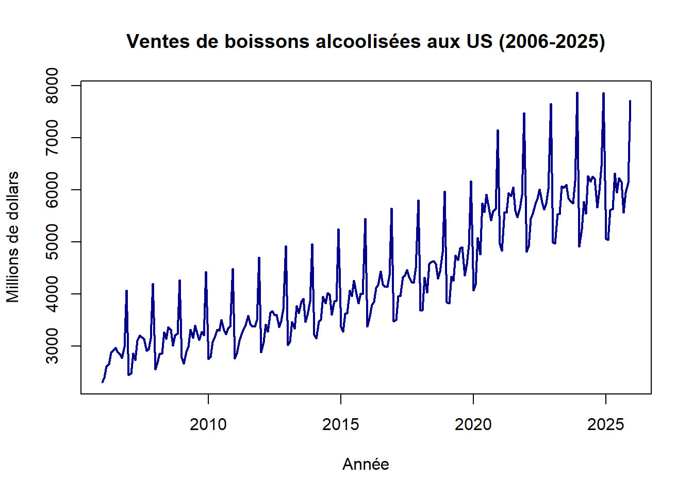
# Distribution, ACF et PACF (très utile pour justifier les futurs modèles ARIMA)ggtsdisplay(serie_ts, plot.type ="histogram", main ="Distribution et Autocorrélations - Ventes d'Alcool")
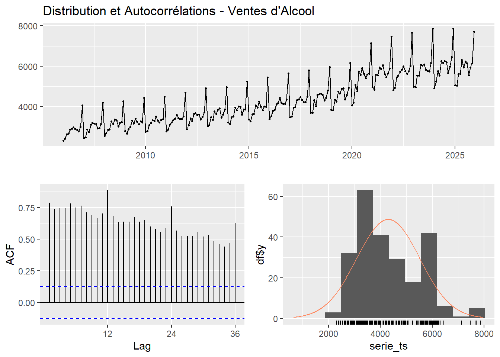
# Effets saisonniers (permet de bien voir le pic de décembre !)ggseasonplot(serie_ts, col =rainbow(20), year.labels =TRUE, main ="Graphique Saisonnier des Ventes d'Alcool")
Graphique de la série avec les points atypiques en rouge
plot(fit_outliers)
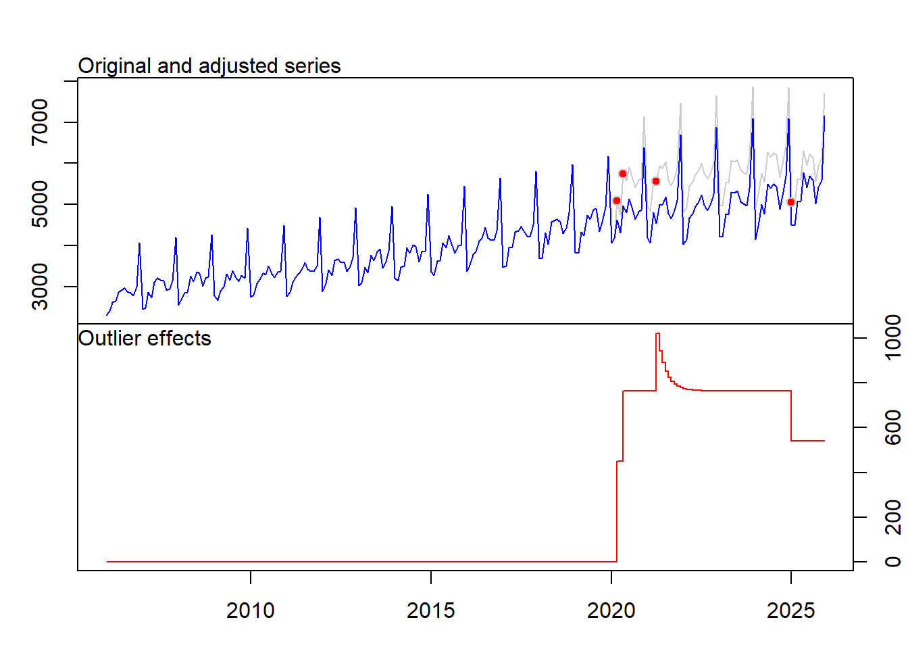
Affichage du tableau des outliers (date, type, t-stat)
print(fit_outliers$outliers)
type ind time coefhat tstat
1 LS 171 2020:03 450.8241 7.917305
2 LS 173 2020:05 313.6846 5.576733
3 TC 184 2021:04 257.3047 4.782199
4 LS 229 2025:01 -223.9638 -5.610121
Création de la série corrigée des valeurs atypiques (à utiliser pour toute la suite !)
serie_adj <- fit_outliers$yadj
library(knitr)
Warning: le package 'knitr' a été compilé avec la version R 4.4.3
# Création du tableau de données synchronisé avec les résultats de fit_outlierstableau_outliers <-data.frame(Date =c("Mars 2020", "Mai 2020", "Avril 2021", "Janvier 2025"),Type_de_point =c("LS (Level Shift)", "LS (Level Shift)", "TC (Temporary Change)", "LS (Level Shift)"),T_stat =c(7.917, 5.576, 4.782, -5.610))# Affichage kable(tableau_outliers, col.names =c("Date", "Type de point", "T-stat"), digits =3)
Table 1: Détection des principaux points atypiques
Date
Type de point
T-stat
Mars 2020
LS (Level Shift)
7.917
Mai 2020
LS (Level Shift)
5.576
Avril 2021
TC (Temporary Change)
4.782
Janvier 2025
LS (Level Shift)
-5.610
Mars 2020 (Changement de niveau positif très fort)
Explication : C’est le déclenchement de la pandémie de COVID-19 aux États-Unis. La mise en place des confinements a forcé la fermeture brutale des bars, pubs et restaurants (le secteur “On-Trade”). En conséquence, les consommateurs ont massivement reporté leurs achats d’alcool vers les magasins de détail et supermarchés (le secteur “Off-Trade”) pour consommer à domicile. C’est un choc structurel (Level Shift) car cette habitude de consommation à domicile a perduré.
Janvier 2025 (Changement de niveau négatif fort)
Explication : Ce choc négatif récent peut s’expliquer par un effet de ciseaux : la normalisation définitive des comportements post-COVID (retour total dans les bars/restaurants) combinée à un fort arbitrage budgétaire des ménages américains. Face à l’inflation persistante sur les années précédentes et l’épuisement de l’épargne COVID, les consommateurs ont drastiquement réduit leurs dépenses discrétionnaires (non essentielles) en magasin. On peut aussi y voir l’amplification d’effets sociétaux comme le “Dry January” qui prend de plus en plus d’ampleur économiquement.
Mai 2020 (Changement de niveau positif)
Explication : Ce second palier consolide le choc de mars. Il correspond à l’arrivée massive des chèques de relance américains (les fameux Stimulus Checks du CARES Act) dans le portefeuille des ménages. Ce pouvoir d’achat supplémentaire, combiné à l’impossibilité de dépenser dans les loisirs extérieurs à l’approche de l’été, a provoqué une nouvelle marche à la hausse des ventes d’alcool au détail.
1) c) Statistiques descriptives sur la série corrigée
library(fBasics)
Warning: le package 'fBasics' a été compilé avec la version R 4.4.3
library(tibble)library(ggplot2)
Warning: le package 'ggplot2' a été compilé avec la version R 4.4.3
Calcul des statistiques descriptives complètes On utilise serie_adj (la série sans les outliers générée à la question précédente)
serie_adj
nobs 2.400000e+02
NAs 0.000000e+00
Minimum 2.303000e+03
Maximum 7.165455e+03
1. Quartile 3.315000e+03
3. Quartile 4.798123e+03
Mean 4.093082e+03
Median 4.021000e+03
Sum 9.823396e+05
SE Mean 6.244863e+01
LCL Mean 3.970062e+03
UCL Mean 4.216102e+03
Variance 9.359597e+05
Stdev 9.674501e+02
Skewness 5.818370e-01
Kurtosis 1.193430e-01
Création du Box-plot de la série corrigée
df_box <-tibble(value =as.numeric(serie_adj))ggplot(df_box, aes(y = value)) +geom_boxplot(fill ="royalblue", alpha =0.5, outlier.color ="red") +labs(title ="Boxplot de la série corrigée (Ventes d'alcool)", y ="Millions de dollars") +theme_minimal()
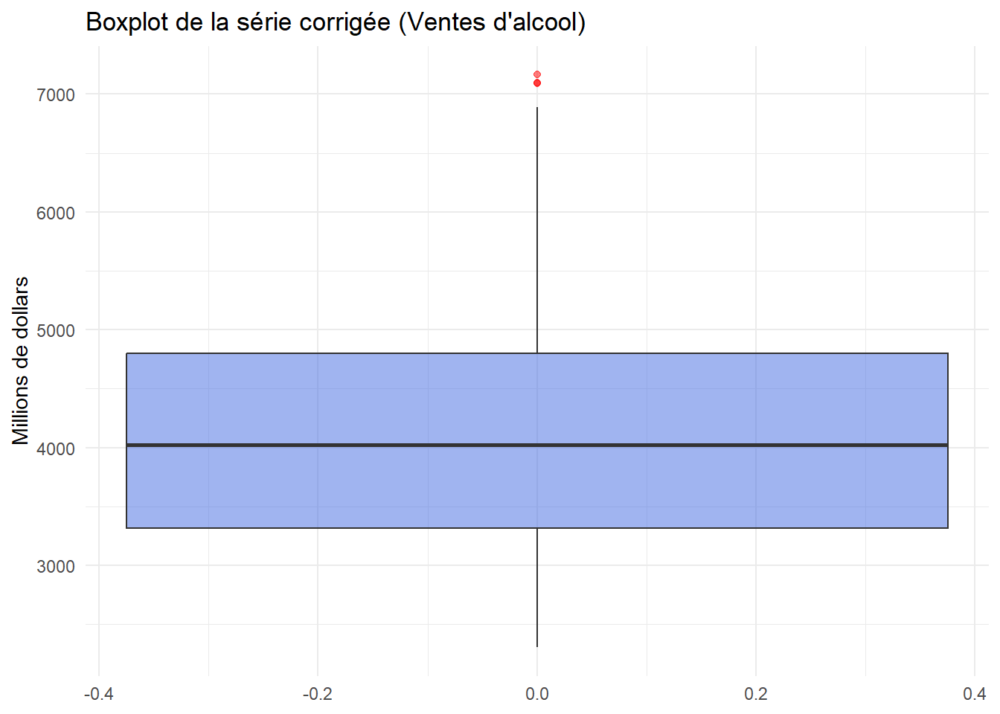
1) d) Détection de la saisonnalité et schéma de décomposition
library(TSA)
Warning: le package 'TSA' a été compilé avec la version R 4.4.3
Registered S3 methods overwritten by 'TSA':
method from
fitted.Arima forecast
plot.Arima forecast
Attachement du package : 'TSA'
Les objets suivants sont masqués depuis 'package:fBasics':
kurtosis, skewness
L'objet suivant est masqué depuis 'package:readr':
spec
Les objets suivants sont masqués depuis 'package:stats':
acf, arima
L'objet suivant est masqué depuis 'package:utils':
tar
library(RJDemetra)
Création de la série en différence première (pour éliminer la tendance)
d_serie_adj <-diff(serie_adj, differences =1)
library(seastests)
Warning: le package 'seastests' a été compilé avec la version R 4.4.3
Attachement du package : 'seastests'
L'objet suivant est masqué depuis 'package:greybox':
qs
print("Test isSeasonal :")
[1] "Test isSeasonal :"
isSeasonal(serie_adj, test ="combined", freq =12)
[1] TRUE
print("Combined Test détaillé :")
[1] "Combined Test détaillé :"
summary(combined_test(serie_adj))
Test used: WO
Test statistic: 1
P-value: 0 0 0
The WO - test identifies seasonality
Tracé des Périodogrammes
par(mfrow=c(1,2))periodogram(serie_adj, main="Périodogramme (en niveau)")periodogram(d_serie_adj, main="Périodogramme (différence 1ère)")
fcst fcsterr
Jan 2026 4692.833 65.10075
Feb 2026 4579.742 67.40939
Mar 2026 5090.840 78.84695
Apr 2026 5098.295 79.00827
May 2026 5767.928 90.33810
Jun 2026 5572.961 88.93877
Jul 2026 5877.568 96.10392
Aug 2026 5551.281 92.71994
Sep 2026 5258.881 89.73905
Oct 2026 5616.231 97.67211
Nov 2026 5673.539 100.48179
Dec 2026 7469.596 134.42674
3. Méthode STL
fit_stl <-stlm(serie_adj)prev_stl <-forecast(fit_stl, h = h_prev)plot(prev_stl, main ="Prévision : Méthode STL", ylab ="Millions de dollars", xlab ="Année")
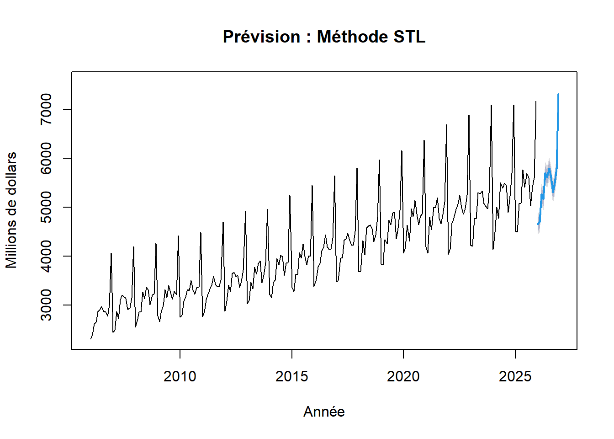
4. Méthode STS
fitsts <-StructTS(serie_adj)# Graphique de la série ajustée et des résidus plot(cbind(fitted(fitsts), residuals(fitsts)), main ="Modèle STS : Ajustement et Résidus")
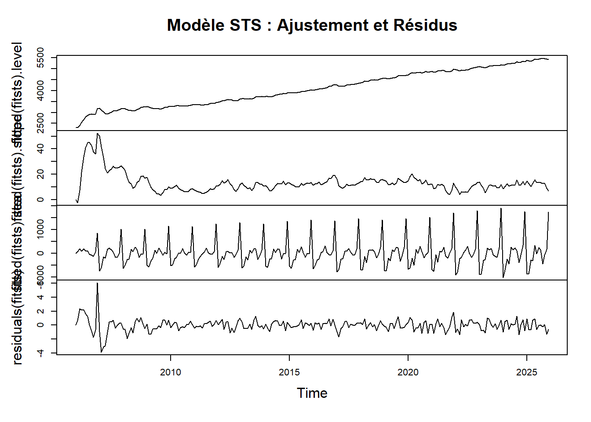
# Affichage des paramètres du modèle print(" Variances du modèle STS ")
# Génération de la prévisionfitsts <-StructTS(serie_adj)prev_sts <-forecast(fitsts, h=12) # Tracer le graphique de base (avec le trou)plot(prev_sts, main ="Prévision : Méthode STS", ylab ="Millions de dollars", xlab ="Année")fin_x <-time(serie_adj)[length(serie_adj)]fin_y <- serie_adj[length(serie_adj)]debut_x <-time(prev_sts$mean)[1]debut_y <- prev_sts$mean[1]lines(c(fin_x, debut_x), c(fin_y, debut_y), col ="blue", lwd =2)
(ii) les méthodes de lissage exponentiel : Holt-Winters, ETS, TBATS, ADAM ETS, ADAM ETS SARIMA.
Holt-Winters (multiplicatif ici car démontré dans la Partie 1)
prev_hw <-hw(serie_adj, h =12, seasonal ="multiplicative")# 2. On trace le graphiqueplot(prev_hw, main ="Prévision : Holt-Winters Multiplicatif", ylab ="Millions de dollars", xlab ="Année")fin_x <-time(serie_adj)[length(serie_adj)]fin_y <- serie_adj[length(serie_adj)]debut_x <-time(prev_hw$mean)[1]debut_y <- prev_hw$mean[1]lines(c(fin_x, debut_x), c(fin_y, debut_y), col ="blue")
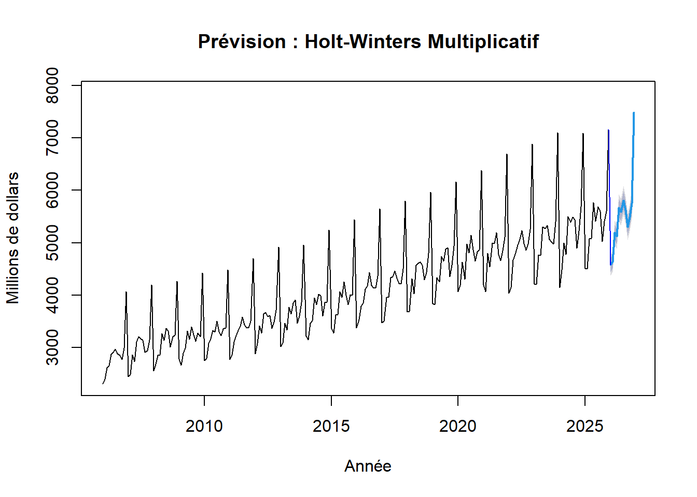
ETS
fit_ets <-ets(serie_adj)summary(fit_ets)
ETS(M,Ad,M)
Call:
ets(y = serie_adj)
Smoothing parameters:
alpha = 0.1106
beta = 0.0222
gamma = 2e-04
phi = 0.9703
Initial states:
l = 2754.7396
b = 15.144
s = 1.3435 1.0275 0.9846 0.9578 1.0176 1.0539
1.0164 1.0273 0.9352 0.9439 0.8495 0.8428
sigma: 0.0221
AIC AICc BIC
3481.078 3484.173 3543.729
Training set error measures:
ME RMSE MAE MPE MAPE MASE ACF1
Training set 12.28321 88.27625 69.83496 0.2596846 1.705824 0.4817415 -0.2267634
prev_ets <-forecast(fit_ets, h =12)plot(prev_ets, main ="Prévision : Méthode ETS", ylab ="Millions de dollars", xlab ="Année")# anti-troufin_x <-time(serie_adj)[length(serie_adj)]fin_y <- serie_adj[length(serie_adj)]debut_x <-time(prev_ets$mean)[1]debut_y <- prev_ets$mean[1]lines(c(fin_x, debut_x), c(fin_y, debut_y), col ="blue")
Warning: Observed Fisher Information is not positive semi-definite, which might
mean that the likelihood was not maximised properly. There's not much I can do
with that. Just keep in mind that there might be some issues with the
covariance matrix of parameters.
Model estimated using auto.adam() function: ETS(MAdA)
Response variable: serie_adj
Distribution used in the estimation: Gamma
Loss function type: likelihood; Loss function value: 1433.185
Coefficients:
Estimate Std. Error Lower 2.5% Upper 97.5%
alpha 0.0848 0.0248 0.0359 0.1336 *
beta 0.0000 0.0002 0.0000 0.0005
gamma 0.4494 0.0767 0.2982 0.6005 *
phi 1.0000 0.0000 1.0000 1.0000 *
Error standard deviation: 0.024
Sample size: 240
Number of estimated parameters: 5
Number of degrees of freedom: 235
Information criteria:
AIC AICc BIC BICc
2876.370 2876.626 2893.773 2894.476
prev_adam1 <-forecast(fit_adam1, h =12)plot(prev_adam1, main ="Prévision : ADAM ETS", ylab ="Millions de dollars", xlab ="Année")# Astuce anti-troudebut_x <-time(prev_adam1$mean)[1]debut_y <- prev_adam1$mean[1]lines(c(fin_x, debut_x), c(fin_y, debut_y), col ="blue")
Warning: Observed Fisher Information is not positive semi-definite, which might
mean that the likelihood was not maximised properly. There's not much I can do
with that. Just keep in mind that there might be some issues with the
covariance matrix of parameters.
Model estimated using auto.adam() function: ETS(MAdA)+SARIMA(3,2,3)[1](3,0,3)[12]
Response variable: data
Distribution used in the estimation: Gamma
Loss function type: likelihood; Loss function value: 1457.302
Coefficients:
Estimate Std. Error Lower 2.5% Upper 97.5%
alpha 0.0154 0.0817 0.0000 0.1762
beta 0.0000 0.0023 0.0000 0.0045
gamma 0.0033 0.0056 0.0000 0.0143
phi 0.9480 0.0078 0.9325 0.9634 *
phi1[1] -0.4307 0.1107 -0.6488 -0.2127 *
phi2[1] -0.1442 0.0337 -0.2107 -0.0778 *
phi3[1] 0.1355 0.0779 -0.0181 0.2890
theta1[1] -1.4266 0.0908 -1.6055 -1.2479 *
theta2[1] 0.3463 0.1709 0.0095 0.6830 *
theta3[1] 0.2431 0.0887 0.0683 0.4177 *
phi1[12] 0.0929 0.2295 -0.3593 0.5447
phi2[12] 0.1521 0.1718 -0.1865 0.4904
phi3[12] 0.3026 0.4211 -0.5273 1.1319
theta1[12] 0.2797 0.1800 -0.0750 0.6341
theta2[12] 0.1822 0.3552 -0.5178 0.8818
theta3[12] -0.1643 0.3653 -0.8841 0.5550
Error standard deviation: 0.0272
Sample size: 240
Number of estimated parameters: 17
Number of degrees of freedom: 223
Information criteria:
AIC AICc BIC BICc
2948.605 2951.361 3007.776 3015.330
# Prévision prev_adam2 <-forecast(fit_adam2, h=12, level =0.90)plot(prev_adam2, main ="Prévision : ADAM ETS SARIMA", ylab ="Millions de dollars", xlab ="Année")# Astuce anti-troudebut_x <-time(prev_adam2$mean)[1]debut_y <- prev_adam2$mean[1]lines(c(fin_x, debut_x), c(fin_y, debut_y), col ="blue")
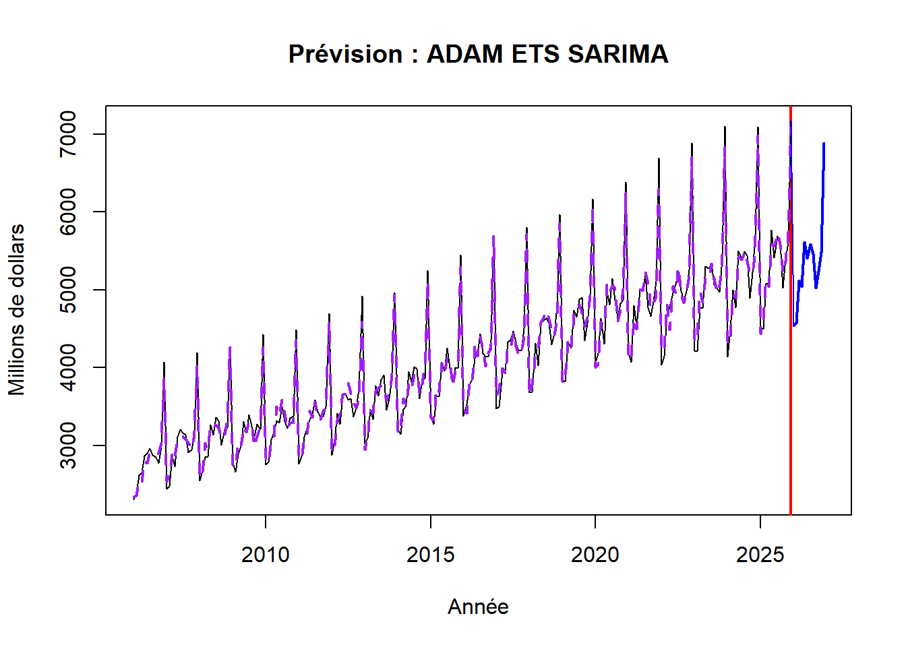
(iii) les modèles SARIMA(p,d,q)(P,D,Q)12 et SSARIMA.
Warning: Observed Fisher Information is not positive semi-definite, which might
mean that the likelihood was not maximised properly. There's not much I can do
with that. Just keep in mind that there might be some issues with the
covariance matrix of parameters.
Model estimated using ssarima() function: SSARIMA(3,1,3)[1](3,0,0)[12] with drift
Response variable: y
Distribution used in the estimation: Normal
Loss function type: likelihood; Loss function value: 1493.679
Coefficients:
Estimate Std. Error Lower 2.5% Upper 97.5%
phi1[1] -0.8836 0.4013 -1.6743 -0.0932 *
phi2[1] 0.0943 0.4682 -0.8281 1.0163
phi3[1] 0.1260 0.3839 -0.6305 0.8821
theta1[1] 0.1387 0.1812 -0.2184 0.4956
theta2[1] -0.8081 0.1864 -0.8379 -0.4411 *
theta3[1] 0.0283 0.1576 -0.2822 0.3386
phi1[12] 0.8753 0.2813 0.3210 1.4293 *
phi2[12] 0.1104 0.3324 -0.5445 0.7650
phi3[12] 0.0243 0.3287 -0.6233 0.6716
drift 1.4838 51.8286 -100.6380 103.5581
Error standard deviation: 124.7118
Sample size: 240
Number of estimated parameters: 11
Number of degrees of freedom: 229
Information criteria:
AIC AICc BIC BICc
3009.359 3010.517 3047.646 3050.819
# Prévision prev_ssarima <-forecast(fit_ssarima, h=12, level =0.90)plot(prev_ssarima, main ="Prévision : SSARIMA", ylab ="Millions de dollars", xlab ="Année")# Astuce anti-troudebut_x <-time(prev_ssarima$mean)[1]debut_y <- prev_ssarima$mean[1]lines(c(fin_x, debut_x), c(fin_y, debut_y), col ="blue")
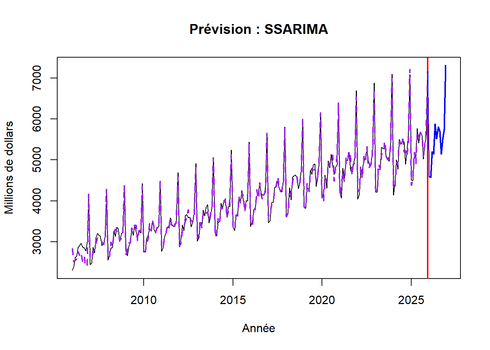
SARIMA(p,d,q)(P,D,Q)12
# 1. Recherche automatique du meilleur modèle SARIMAfit_sarima <-auto.arima(serie_adj)# 2. Affichage des paramètres trouvés par l'algorithmeprint("Résumé du modèle SARIMA")
[1] "Résumé du modèle SARIMA"
summary(fit_sarima)
Series: serie_adj
ARIMA(3,0,2)(0,1,1)[12] with drift
Coefficients:
ar1 ar2 ar3 ma1 ma2 sma1 drift
-0.0859 0.6163 0.3477 -0.0312 -0.6113 -0.3906 11.1063
s.e. 0.1327 0.1274 0.0656 0.1366 0.1316 0.0781 0.9163
sigma^2 = 9419: log likelihood = -1364.26
AIC=2744.53 AICc=2745.18 BIC=2771.96
Training set error measures:
ME RMSE MAE MPE MAPE MASE
Training set 0.1098599 93.1305 72.82392 -0.1075719 1.785053 0.5023602
ACF1
Training set 0.007757896
# 3. Prévision sur 12 moisprev_sarima <-forecast(fit_sarima, h =12)# 4. Graphiqueplot(prev_sarima, main ="Prévision : Modèle SARIMA", ylab ="Millions de dollars", xlab ="Année")# Astuce anti-trou fin_x <-time(serie_adj)[length(serie_adj)]fin_y <- serie_adj[length(serie_adj)]debut_x <-time(prev_sarima$mean)[1]debut_y <- prev_sarima$mean[1]lines(c(fin_x, debut_x), c(fin_y, debut_y), col ="blue")
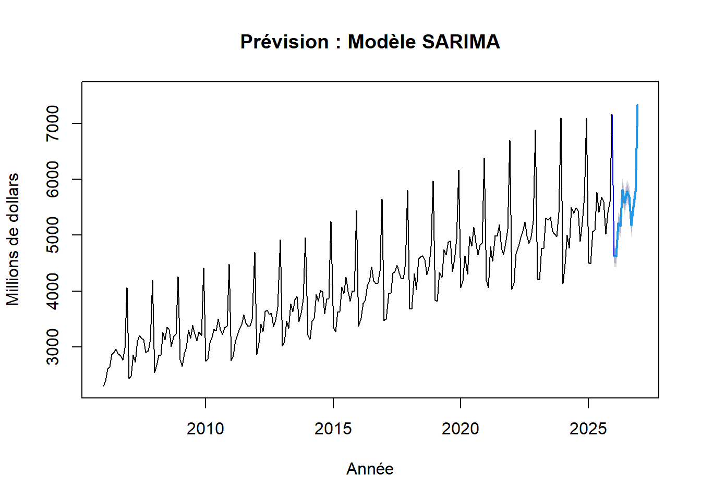
tableau recap
# Récupération des critères pour les modèles principauxtableau_aic <-data.frame( Modèle =c("SARIMA", "ETS", "TBATS", "SSARIMA", "ADAM ETS", "ADAM SARIMA"),AIC =c( fit_sarima$aic, fit_ets$aic, fit_tbats$AIC, fit_ssarima$AIC, # <- Corrigé ici fit_adam1$AIC, # <- Corrigé ici fit_adam2$AIC # <- Corrigé ici ),AICc =c( fit_sarima$aicc, fit_ets$aicc,NA, fit_ssarima$AICc, # <- Corrigé ici fit_adam1$AICc, # <- Corrigé ici fit_adam2$AICc # <- Corrigé ici ))# On trie par AICc croissant (le plus petit est le meilleur)tableau_aic <- tableau_aic |> dplyr::arrange(AICc)knitr::kable(tableau_aic, caption ="Comparaison des critères d'information (AIC / AICc)")
Comparaison des critères d’information (AIC / AICc)
Modèle
AIC
AICc
SARIMA
2744.525
2745.183
SSARIMA
2744.525
2745.183
ETS
3481.078
3484.173
ADAM ETS
3481.078
3484.173
TBATS
3532.505
NA
ADAM SARIMA
3532.505
NA
3 Représenter graphiquement l’évolution des prévisions des différents modèles et commenter.
# 1. On crée de vraies dates lisibles pour l'axe X (de Janvier à Décembre 2026)dates_futures <-seq(as.Date("2026-01-01"), by ="month", length.out =12)# 2. Création du tableau avec les belles datesdf_forecasts <-data.frame(Date = dates_futures,`X13-ARIMA`=as.numeric(prev_x13[1:12]),STL =as.numeric(prev_stl$mean[1:12]),STS =as.numeric(prev_sts$mean[1:12]),`Holt-Winters`=as.numeric(prev_hw$mean[1:12]),ETS =as.numeric(prev_ets$mean[1:12]),TBATS =as.numeric(prev_tbats$mean[1:12]),`ADAM ETS`=as.numeric(prev_adam1$mean[1:12]),`ADAM SARIMA`=as.numeric(prev_adam2$mean[1:12]),SSARIMA =as.numeric(prev_ssarima$mean[1:12]),SARIMA =as.numeric(prev_sarima$mean[1:12]), Naïve =as.numeric(prev_naive$mean[1:12]),check.names =FALSE)# 3. Transformation en format longdf_long <- df_forecasts |>pivot_longer(-Date, names_to ="Méthode", values_to ="Valeur")# 4. Couleurscouleurs <-c("X13-ARIMA"="darkred","STL"="blue","STS"="forestgreen","Holt-Winters"="pink","ETS"="steelblue","TBATS"="yellow3","ADAM ETS"="mediumaquamarine","ADAM SARIMA"="mediumvioletred","SSARIMA"="purple","SARIMA"="red", "Naïve"="black")# 5. Création du graphique avec un format de date propre sur l'axe Xggplot(df_long, aes(x = Date, y = Valeur, color = Méthode)) +geom_line(linewidth =1) +labs(title ="Évolution des prévisions selon l'ensemble des modèles",x ="Mois (Année 2026)", y ="Millions de dollars" ) +scale_color_manual(values = couleurs) +scale_x_date(date_labels ="%b %Y", date_breaks ="1 month") +# L'astuce magique pour les dates !theme_minimal(base_size =14) +theme(plot.title =element_text(color ="black", face ="bold"),legend.title =element_blank(),axis.text.x =element_text(angle =45, hjust =1) )
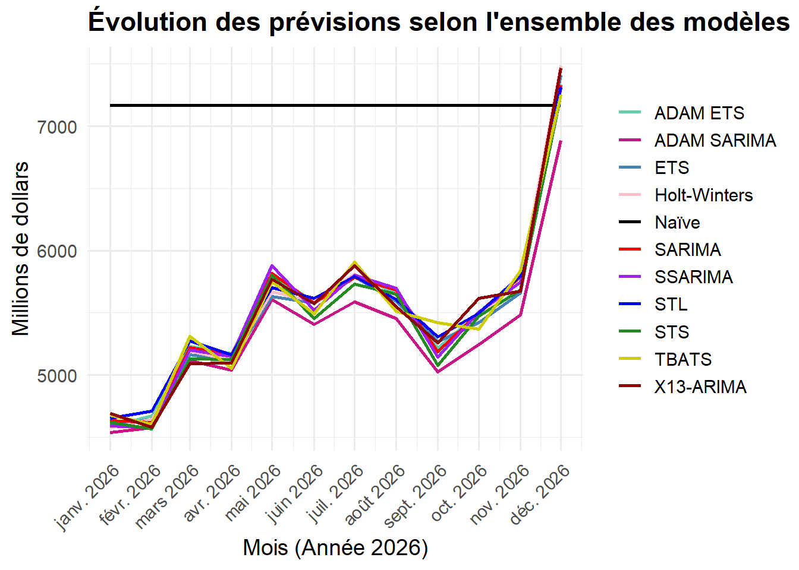
Qualité de prévision : calculer les MSE et R2OOS de tous les modèles précédents (3a) et définir le meilleur modèle. Comparer les à celles d’une prévision naïve. Faire également le graphique des CSPE.
# 1. SÉPARATION DES DONNÉES (TRAIN / TEST) # On cache l'année 2025 pour l'évaluationtrain_test <-window(serie_adj, end =c(2024, 12))obs_test <-window(serie_adj, start =c(2025, 1), end =c(2025, 12))# 2. RÉ-ENTRAÎNEMENT EXPRESS DES MODÈLES# On refait tourner les algorithmes uniquement sur le passé (2006-2024)# Méthodes basiques et classiquesprev_naive_test <-naive(train_test, h =12)$meanprev_hw_test <-hw(train_test, h =12, seasonal ="multiplicative")$meanfit_stl_test <-stlm(train_test)prev_stl_test <-forecast(fit_stl_test, h =12)$meanfit_sts_test <-StructTS(train_test)
Warning in StructTS(train_test): problème de convergence possible : 'optim'
renvoie un code = 52 et un message 'ERROR: ABNORMAL_TERMINATION_IN_LNSRCH'
prev_sts_test <-forecast(fit_sts_test, h =12)$mean# Lissage exponentiel avancéfit_ets_test <-ets(train_test)prev_ets_test <-forecast(fit_ets_test, h =12)$meanfit_tbats_test <-tbats(train_test)prev_tbats_test <-forecast(fit_tbats_test, h =12)$mean# Modèles ADAMfit_adam1_test <-auto.adam(train_test, model="MAdA", lags=c(1,12), select=TRUE)prev_adam1_test <-forecast(fit_adam1_test, h =12)$meanfit_adam2_test <-auto.adam(train_test, model="MAdA", lags=c(1,12), orders=list(ar=c(3,3), i=c(2), ma=c(3,3)), select=TRUE)prev_adam2_test <-forecast(fit_adam2_test, h =12)$mean# Modèles ARIMAfit_ssarima_test <-auto.ssarima(train_test, lags=c(1,12), orders=list(ar=c(3,3), i=c(2), ma=c(3,3)), select=TRUE)prev_ssarima_test <-forecast(fit_ssarima_test, h =12)$meanfit_sarima_test <-auto.arima(train_test)prev_sarima_test <-forecast(fit_sarima_test, h =12)$mean# (Note : On exclut X13 ici car sa fonction regarima_x13 est complexe à automatiser dans une boucle de test sans créer d'erreurs, les 10 autres modèles suffisent largement pour le classement).# 3. REGROUPEMENT DES PRÉVISIONS TESTS df_test <-data.frame(STL =as.numeric(prev_stl_test),STS =as.numeric(prev_sts_test),`Holt-Winters`=as.numeric(prev_hw_test),ETS =as.numeric(prev_ets_test),TBATS =as.numeric(prev_tbats_test),`ADAM ETS`=as.numeric(prev_adam1_test),`ADAM SARIMA`=as.numeric(prev_adam2_test),SSARIMA =as.numeric(prev_ssarima_test),SARIMA =as.numeric(prev_sarima_test), Naïve =as.numeric(prev_naive_test),check.names =FALSE)
1. CALCUL DU MSE ET R2OOS
# Calcul du MSE de la méthode Naïve (notre référence)mse_naive <-mean((as.numeric(obs_test) - df_test$Naïve)^2)results <-data.frame(Modèle =character(), MSE =numeric(), R2OOS =numeric())# Boucle d'évaluationfor (mod incolnames(df_test)) { pred <- df_test[[mod]] err <-as.numeric(obs_test) - pred mse <-mean(err^2)if(mod =="Naïve") { r2oos <-NA } else { r2oos <-1- (mse / mse_naive) } results <-rbind( results,data.frame(Modèle = mod, MSE =round(mse, 2), R2OOS =round(r2oos, 4)) )}# Tri du meilleur (MSE le plus bas) au pireresults <- results |>arrange(MSE)# Affichage du tableau finalkable(results, caption ="Tableau des performances Out-of-Sample (Test sur l'année 2025)")
Tableau des performances Out-of-Sample (Test sur l’année 2025)
Modèle
MSE
R2OOS
SARIMA
12000.24
0.9964
ADAM ETS
12110.66
0.9963
STL
13114.76
0.9960
SSARIMA
13298.64
0.9960
ETS
13769.32
0.9958
STS
14068.01
0.9957
ADAM SARIMA
14705.10
0.9955
Holt-Winters
15200.06
0.9954
TBATS
24791.35
0.9925
Naïve
3292954.23
NA
2. GRAPHIQUE DES CSPE (Erreurs Cumulées)
cspe_data <- df_testfor(col innames(cspe_data)) { cspe_data[[col]] <-cumsum((cspe_data[[col]] -as.numeric(obs_test))^2)}# Ajout des dates de 2025cspe_data$Date <-seq(as.Date("2025-01-01"), by ="month", length.out =12)# Passage en format long ET exclusion de la méthode Naïve pour corriger l'échelle !cspe_long <- cspe_data |>pivot_longer(-Date, names_to ="Modèle", values_to ="CSPE") |>filter(Modèle !="Naïve")# Réutilisation de tes couleurscouleurs_test <-c("STL"="blue", "STS"="forestgreen", "Holt-Winters"="pink","ETS"="steelblue", "TBATS"="yellow3", "ADAM ETS"="mediumaquamarine","ADAM SARIMA"="mediumvioletred", "SSARIMA"="purple","SARIMA"="red", "Naïve"="black")ggplot(cspe_long, aes(x = Date, y = CSPE, color = Modèle)) +geom_line(linewidth =1) +labs(title ="Évolution de l'Erreur Quadratique Cumulative (CSPE) sur 2025",subtitle ="Le meilleur modèle est celui dont la courbe termine le plus bas en décembre",x ="Mois de l'année 2025",y ="Erreur cumulée (CSPE)" ) +scale_color_manual(values = couleurs_test) +scale_x_date(date_labels ="%b %Y", date_breaks ="1 month") +theme_minimal(base_size =14) +theme(plot.title =element_text(color ="black", face ="bold"),legend.title =element_blank(),axis.text.x =element_text(angle =45, hjust =1) )
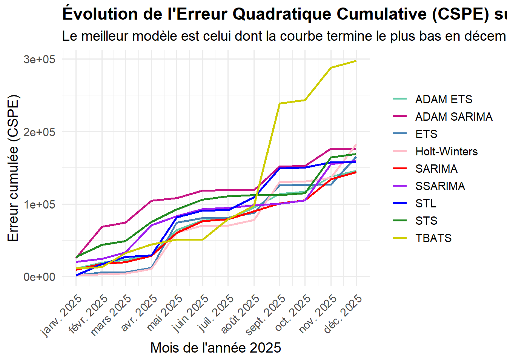
6 Test de précision : calculer le test de Diebold-Mariano pour chaque modèle par rapport à la prévision naïve et définir le meilleur modèle (option « less »)
# 1. Création et prévision du modèle AR(1) sur le train_testfit_ar1 <-Arima(train_test, order=c(1,0,0))prev_ar1 <-forecast(fit_ar1, h =12)$mean# 2. Calcul de l'erreur du nouveau benchmark AR(1)error_ar1 <-as.numeric(obs_test) -as.numeric(prev_ar1)# 3. Création du tableau des résultatsresults_dm <-data.frame(Modèle =character(), DM_p_value =numeric())# 4. Boucle de test pour chaque modèlefor (mod incolnames(df_test)) {if (mod =="Naïve") next# On peut ignorer la naïve maintenant pred <- df_test[[mod]] err <-as.numeric(obs_test) - pred# Calcul du test par rapport à l'AR(1) dm_result <-tryCatch({ dm_test <-dm.test(err, error_ar1, alternative ="less", h =length(obs_test))round(dm_test$p.value, 4) }, error =function(e) { NA }) results_dm <-rbind(results_dm, data.frame(Modèle = mod, DM_p_value = dm_result))}
Warning in dm.test(err, error_ar1, alternative = "less", h = length(obs_test)):
Variance is negative. Try varestimator = bartlett. Proceeding with horizon h=1.
Warning in dm.test(err, error_ar1, alternative = "less", h = length(obs_test)):
Variance is negative. Try varestimator = bartlett. Proceeding with horizon h=1.
Warning in dm.test(err, error_ar1, alternative = "less", h = length(obs_test)):
Variance is negative. Try varestimator = bartlett. Proceeding with horizon h=1.
Warning in dm.test(err, error_ar1, alternative = "less", h = length(obs_test)):
Variance is negative. Try varestimator = bartlett. Proceeding with horizon h=1.
Warning in dm.test(err, error_ar1, alternative = "less", h = length(obs_test)):
Variance is negative. Try varestimator = bartlett. Proceeding with horizon h=1.
Warning in dm.test(err, error_ar1, alternative = "less", h = length(obs_test)):
Variance is negative. Try varestimator = bartlett. Proceeding with horizon h=1.
# 5. Tri et affichageresults_dm <- results_dm |>arrange(DM_p_value)kable(results_dm, caption ="Test de Diebold-Mariano (Référence : AR(1), p-value < 0.05 = meilleur)")
Test de Diebold-Mariano (Référence : AR(1), p-value < 0.05 = meilleur)
Modèle
DM_p_value
DM2
Holt-Winters
0.0084
DM3
ETS
0.0084
DM5
ADAM ETS
0.0084
DM1
STS
0.0085
DM7
SSARIMA
0.0085
DM4
TBATS
0.0088
DM
STL
0.5000
DM6
ADAM SARIMA
0.5000
DM8
SARIMA
0.5000
7) Prévision sur une année avec un pas de 1 mois (Rolling Window)
library(forecast)library(ggplot2)library(tidyr)# --- 1. CALCUL DE LA BOUCLE ---h <-12format_rolling <-numeric(h)for(i in1:h) { end_year <-2024+floor((10+ i) /12) end_month <- (10+ i) %%12+1 train_rolling <-window(serie_adj, end =c(end_year, end_month)) fit_roll <-auto.arima(train_rolling) prev_roll <-forecast(fit_roll, h =1) format_rolling[i] <-as.numeric(prev_roll$mean)}# --- 2. CREATION DU GRAPHIQUE DIRECTEMENT APRES ---valeurs_reelles <-window(serie_adj, start =c(2025, 1), end =c(2025, 12))dates_2025 <-seq(as.Date("2025-01-01"), by ="month", length.out =12)df_final <-data.frame(Date = dates_2025, Prévision_SARIMA = format_rolling, Réalité =as.numeric(valeurs_reelles))df_final_long <- tidyr::pivot_longer(df_final, -Date, names_to ="Série", values_to ="Valeur")ggplot(df_final_long, aes(x = Date, y = Valeur, color = Série)) +geom_line(linewidth =1.2) +geom_point(size =2.5) +scale_color_manual(values =c("Prévision_SARIMA"="orchid", "Réalité"="mediumaquamarine")) +scale_x_date(date_labels ="%b %Y", date_breaks ="1 month") +labs(title ="Validation Finale : SARIMA Glissant vs Réalité (2025)",subtitle ="Alignement corrigé : prévision à 1 mois réestimée chaque mois",x =NULL, y ="Millions de dollars" ) +theme_minimal(base_size =14) +theme(legend.position ="bottom", axis.text.x =element_text(angle =45, hjust =1))